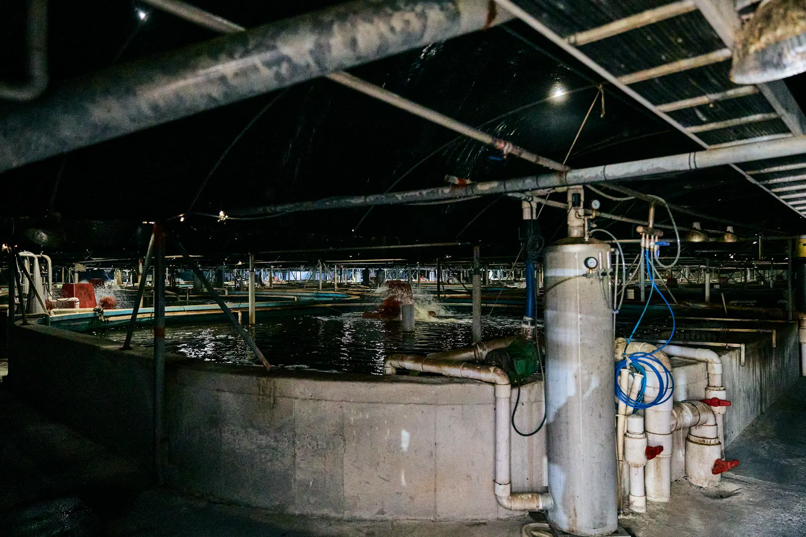
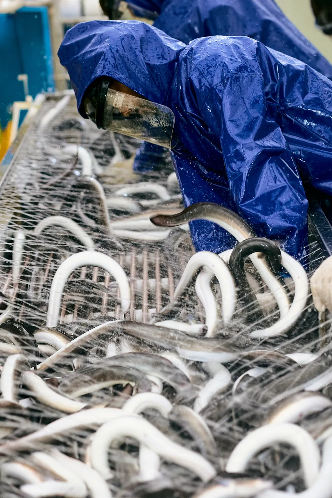
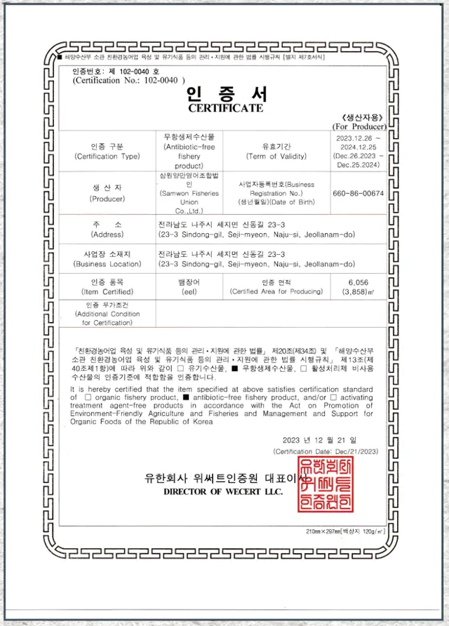
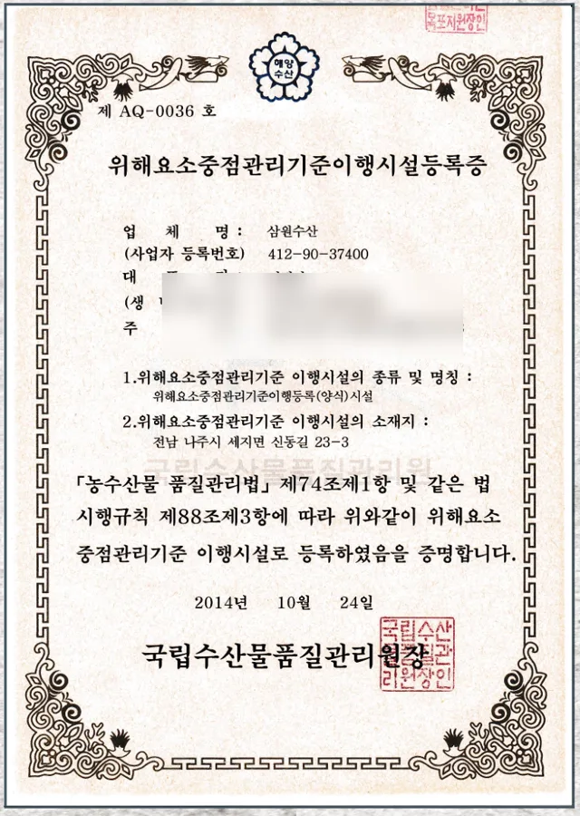
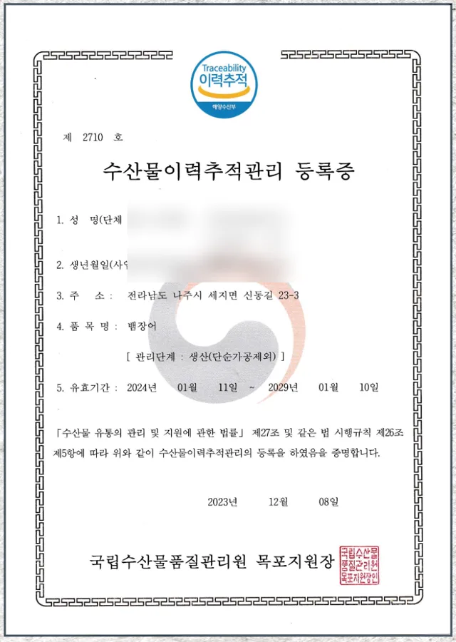
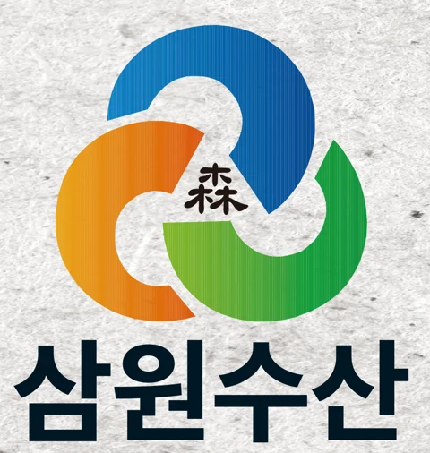

지하 천연 암반수
지하에서 끌어올린 천연 암반수로 장어를 기릅니다.


중간 유통 마진을 줄여 우수한 품질의 장어를 저렴하게 드리겠습니다
2009년 양식을 시작해 최신 시설에서 지하 천연 암반수로 100% 자포니카산 토종 장어만 기르고 있습니다. 국립수산물품질관리원의 주기적인 안전성 검사로 청결을 유지합니다.
2009년
장어 양식 시작
100%
자포니카산 토종 장어
3건
무항생제, HACCP, 이력추적 인증
삼원수산 민물장어는 자연 상태와 가장 가까운 환경에서 건강하고 안전하게 키웁니다.

지하에서 끌어올린 천연 암반수로 장어를 기릅니다.

주위에 오염원이 전혀 없는 환경에서 양식합니다.

정부 기관의 정기 안전성 검사, 성분 검사, 수질 검사를 받습니다.
삼원수산 민물장어가 받은 공인 인증입니다.

항생제를 쓰지 않고 기른 수산물 인증

제 AQ-0036호, 국립수산물품질관리원

제 2710호, 국립수산물품질관리원 목포지원
